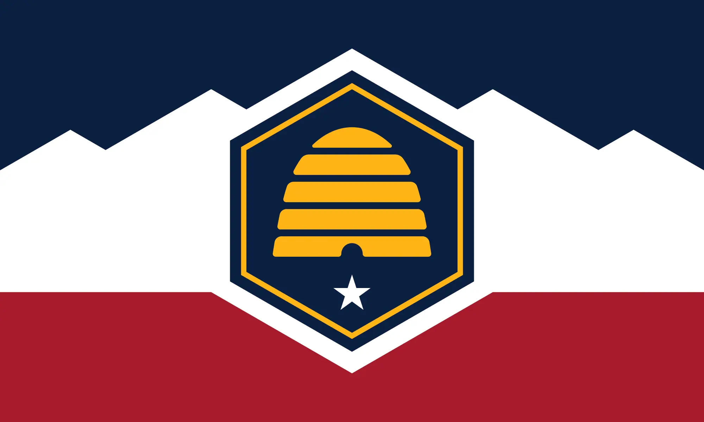

About Me
My name is Matthew Tilton. I live in Spanish Fork, Utah with my amazing wife of 29 years. Together we have 5 children with the youngest being 18. We have our first grandchild due in 3 - 4 weeks. I currently work two jobs and attend school. My primary job is Systems Administrator. I have done this for over 27 years. In this postion I work with network and server equipment. Security is my primary focus, but I'm also in charge of developing new tools and scripts to manage the network and servers. I recently built a web app using PHP, HTML, JavaScript, and MSSQL for an internal hiring system, and another for inventory. That one was tricky as I needed to include PowerShell scripts as well to collect server data to be stored in the database for auditing. In my spare time (if I ever have any) I like to spend with my wife and family, but I also love being in the mountains. I also work in the temple each Friday evening. It is my favorite day of the week for that reason.
Spanish Fork, Utah - United States

Utah - Opinion: Best State in the United States. It was the 45th state to join the US on January 4, 1896. Utah is home to one of the best national parks in the world. Arches National Park is home to the famous Delicate Arch and Landscape Arch. Utah also have a variety of geopraphy. Large mountains, deserts, sand dunes, rivers and lakes, plateau's, famous red rocks, and of course the largest salt water lake in the world (not that you woudl want to swim in it).